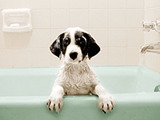
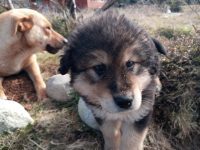

Bienvenidos a nuestro nuestro sitio!!
El gusto se rompe en géneros, pero algunos de nosotros podemos tener gustos culposos. Estos gustos son los que no encajan por completo en nuestra personalidad, grupo social o estilo de vida pero aun así nos atraen. Un gusto culposo puede ser tu inclinación hacia un gato o un perro, por ejemplo si en tu familia todos son de perros y tus amigos tienen perros pero a ti te gustan los gatos, puede ser que no entiendas bien el por qué y sientas que es un gusto culposo. Pero esto tiene una explicación, es que tu personalidad te jala hacia una especie en particular por una serie de características tuyas.
Fans de los perros
Las personas que tienen o prefieren a los perros tienen características similares y bien definidas, no es casualidad que prefieras la compañía de un canino a la de un felino, es más, puede ser que incluso los felinos te parezcan un poco desagradables, y no hay nada malo en ti, es solo que tu forma de ser no es afín a ellos. En general las personas que son fans de los perros son seres sociables (tanto en persona como en línea), que necesitan estar rodeados de gente o necesitan estar en contacto con alguien más, son alegres, amigables (en promedio tienen hasta 26 amigos más), leales, les gusta moverse en grupos, están más dispuestos a seguir indicaciones. En cuestión amorosa son personas que no les gusta la soledad y prefieren la vida en pareja. Cuando están enamorados se entregan por completo. Aman ir al cine o ver películas acompañados para tener con quien comentar, prefieren best-sellers o historias con hilo romántico. Ya sea que vivan o bien anhelan vivir en lugares grandes, con espacios abiertos y prefieren vivir en las afueras de la ciudad o en zonas tranquilas, lejos del alboroto de las grandes urbes (aunque no siempre puedan hacerlo). Son personas a quienes les cuesta mucho reconocer cuando necesitan ayuda o se sienten mal. Los amantes de los caninos son personas leales, sociales, algo emocionales y un poco invasivos porque no les gusta estar solos.
Fans de los gatos
Las personas que se sienten atraídos por los gatos son en general personas reservadas, independientes y algo impredecibles, por lo general son más solicitados a eventos sociales, tal vez, porque no siempre asisten y su asistencia es muy valorada, son mucho más propensos a relacionarse con otras personas que también tengan gatos. Odian seguir indicaciones, les gusta moverse a su tiempo, en sus términos y sin sentir presión. En el amor disfrutan su soltería y no le temen a la soledad, cuando tienen pareja son muy entregados pero mantienen sus reservas, son muy cautelosos. Disfrutan su espacio, aman disfrutar una tarde solos en compañía de un libro o una película, sin que nadie les esté comentando, en general se inclina más a temas como ciencia ficción. Buscan lugares pequeños para vivir, ya sean departamentos o casas pequeñas, les gusta el sentimiento de acogimiento y prefieren vivir en las ciudades. A los dueños de los gatos les es más fácil decir cuando están cansados o tristes o felices, es decir no tienen mucho problema en expresar sus emociones positivas o negativas. En general los amantes de los felinos son independientes, precavidos, celosos de su espacio y un tanto misteriosos.
Lo ultimo de nuestro blog

Los animales necesitan carino

Camina con tu mascota
Para muchos de nosotros las mascotas no son simples companeros, son miembros de la familia.
Conie

Tom

Sam
